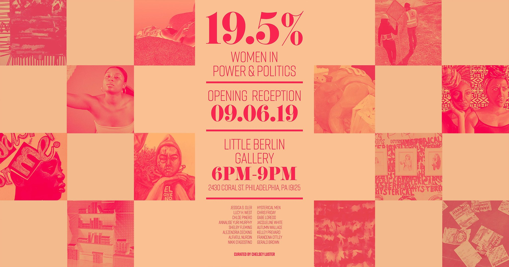

19.5% : WOMEN IN POWER & POLITICS
September 2019
Friday, September 6, 2019 6:00 PM 18:00 Monday, September 30, 2019 12:00 AM 00:00
Join us for 19.5%, a group exhibition showcasing works by woman about women in power and politics. Curated by @chelseylusterart ❤️
Friday September 6th - September
6 pm - 9pm
This exhibition features work by Jessica S. Oler, Lucy H. West, Chloe Pinero, Nalise Yuri Murphy, Shelby Fleming, Alezandria Decking, Alfiatul Nurdin, Nikki D'Agostino, Hysterical Men, Chris Friday, Gabe Loredo, Jacqueline White, Autumn Wallace, Kelley Prevard, Francena Ottley and Gerald Brown.
